In order to consciously evolve we must recognize the levels of consciousness through which we pass on our path toward higher, more productive, less destructive realms of existence.
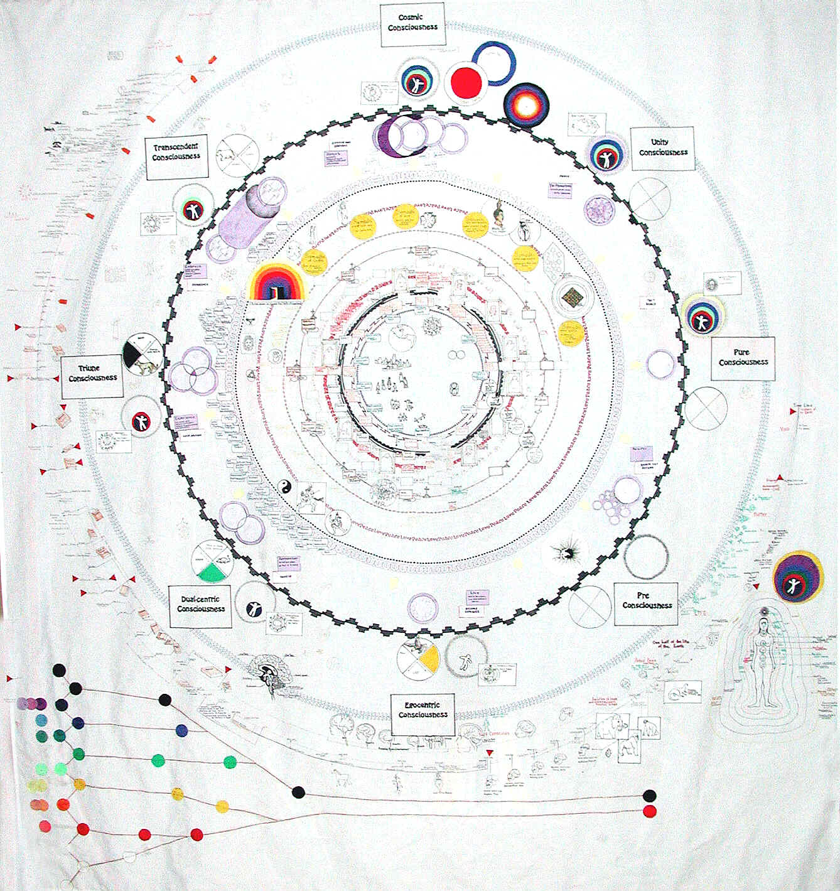
(Click to Enlarge)
Each of these illustrations begins at bottom center of diagram or drawing and circles sunwise - to the left and up. Levels/stages of consciousness of each and all circles include: Ego-Centric Consciousness, Dual-Centric consciousness, Triune Consciousness, Transcendent Consciousness, Cosmic Consciousness, Unity Consciousness, Pure consciousness, Pre-Consciousness. The innermost circle includes pictures representing individual levels.
The first circle describes physical and subtle bodies. birth/infancy, youth/child, adolescent/young adult, ethno-centric adult, socio-centric adult, wisdom elders, sage/guru/master, beyond death, subtle bodies, creation source, pre-conception, conception, and fetal stage.
Imagines drawing a line from the center point of the above image to the outer edge. Corresponding points (areas) on each circle line up with one of the stages/levels of consciousness.
14. Time Line
8. Gateways
7. Islamic
6. Christianity
5. Confucianism
4. Buddhism
3. Judaism
2. Hinduism
1.1Physical and subtle bodies
Outer time line includes the earth's beginning, first cells, microscopic creatures, multi-cellular creatures, development of the brain, development of early man, religious symbols and books - more.
Underneath the circles are the progressions of human color vision.
Right side - lower bottom is illustrated the subtle body sheaths and
chakras.
BEGIN AT BOTTOM OF SECTION DESCRIBING LEVELS OF CONSCIOUSNESS
Levels of Consciousness
Cosmic Consciousness is what we have previously understood as the highest possible attainment. It is where we go when we die - heaven - according to many current teachings.
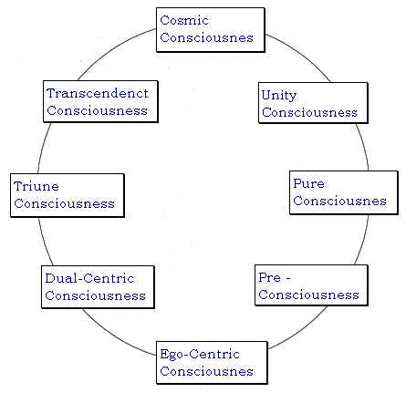
Transcendent Consciousness is when we have begun to transcend the limits of the world and connect with the higher level called Cosmic.
Triune Consciousness is when we begin to recognize our relationship with many others - family, community, and country. It is where are ethnocentric.Dual-Centric Consciousness is a state of relationship with others - especially one to one relationships - like parent-child, partners, friend. In this level of development, an individual recognizes and takes into consideration the needs of another and balanced with personal needs.
Ego-Centric Consciousness is a state of self-serving. An example is the infant that is interested in only basic survival needs being met. It is a personal stage of development where the perspective of the needs and desires of others are not taken to consideration .
Levels of Consciousness - cont.
Unity Consciousness -
Pure Consciousness
Pre-Consciousness
This is the third circle from the center. It is a part of the circle on Buddhism.
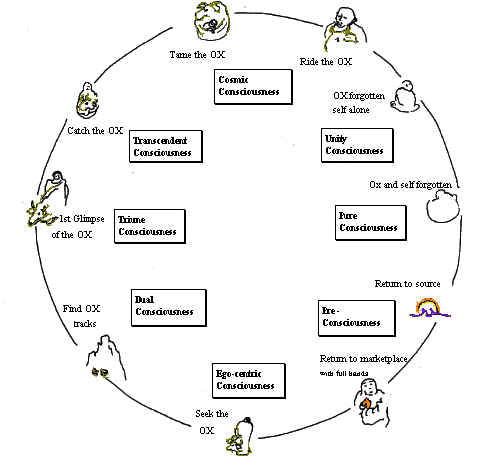
Centuries ago, a series of pictures were used as teaching tools to illustrate the path of awakening. They were often wood engravings which allowed for repeated reproductions.
These pictures were known as "seeking the ox" or the “ox-taming’ series. They are associated with Zen teachings.
This series formed a visual story of the stages of
achieving the Buddhist enlightened mind - our true nature.
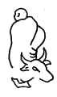
1. Seek the Ox. This picture generally shows an ox alone, or a person alone. It is also called “Struggling to Emerge from Confusion”. This is the beginning stage of awareness. The ox was the first animal to be tamed and utilized by man. This was not an easy undertaking. The first step is to become aware that there is something more, that there are "not previously recognized possibilities". We, as humans, enter the earth realm with veils of unknowing and therefore we are not aware and often do not seek beyond what is apparent. The first step toward an enlightened mind is recognizing that there is something to seek.
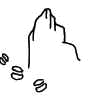
2. Finding the Tracks. The ox, in this picture is not seen. Only tracks or indications of an ox is visible to us. This represents our first attempt to discover the nature of the ox. At this stage, we begin to ask questions - we begin to study. Information gleaned is only surface, intellectual understanding. However, it is often sufficient to encourage us to continue our explorations. Its sparks flame our curiosity toward active seeking.
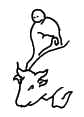
3. First Glimpse of the Ox, represents our beginning abilities to sense and feel that there is something more, something beyond our five senses. This stage encourages us to continue to pursue our search for that which our spirit intuits. It is this first glimpse of the existence of the "ox" that sets in motion our quest.
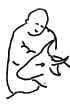
4. Catch the Ox. This picture gives us a visual representation of when we begin to grasp the teachings that come to us. It sometimes feels that we have a tiger by the tail rather than an ox by the horns. We may occasionally wish to release the ox but are tantalized by the possibilities and continue to hang on. Through perseverance we experience small successes.
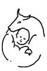
5. Tame the Ox. When we begin to realize possibilities that lie ahead we become willing to actively start the process of taming our mind, our thoughts, our speech, and our actions. It is at this stage we come to recognize that there is much to be gained if we continue our pursuit of our relationship with the ox and the possibilities that are open to us. We recognize that ox/self are one in the totality of the all.
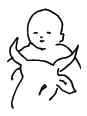
6. Riding the Ox Home, depicts our intense inner work. It is here that we identify strengths and weaknesses of the ox and of ourselves. We work on our beliefs about our basic survival needs and skills. We explore our relationships and sensuality. Issues of personal power are dealt with. Blocks to love and healing are released. This is intense work and results in establishing some level of control over our own energies. To “ride the ox” is to have tamed it. To tame the ox is to tame ourselves. The ox, or our own inner nature, now is under our own command. We are now able to extend our abilities in the world because we have control of the ox and can use these inner energies to manifest our desires.
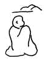
7. Ox Forgotten - Self alone - Self Forgotten, is the state associated with this picture. This is the direct experience of the inner wisdom of knowing that comes beyond all aspects of the self, beyond all external influences of the ox or of any form from the material world. It is knowing for its own sake, knowing that can be gleaned from spirit and brought back to the world of form.
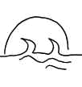
8. Return to the Source, is the experience of absolute oneness. It is the merging with All That Is. It is returning to the great ultimate One of ALL. It is our return to our deepest inner knowing and remembering of our sacred Home. It is knowing and being who we are, why we came to this realm, and what our path is while we are here. It is Remembering Who We Are.
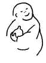
9. Entering the Marketplace with Helping Hands. Once we have sought, found, tamed, and ridden the ox - we learned to forget the ox and forget ourselves. We learned/remembered who we are. We the remember to return to the world and to be of service. We understand and empower our our true nature and our physical and spiritual energies. Then we actively live our path. We live through our harmony and our example with our family, our friends, our community, and our world. We walk the path of enlightenment for all existence.